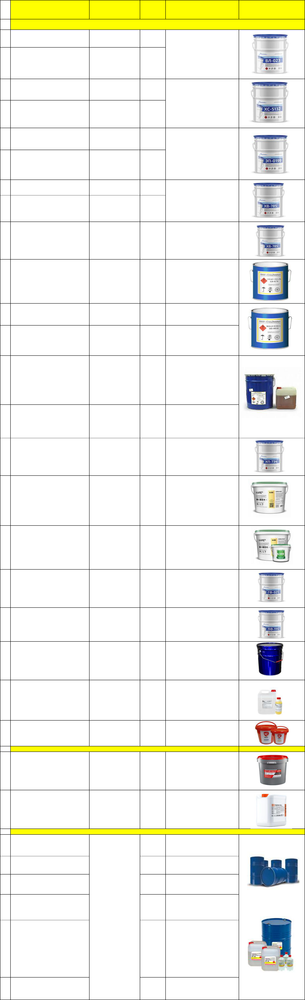

Материалы эпоксидные, 2-х компонентные,пыщевые,маслобензостойкие лаки,растворители.
Грунтовка ВЛ-023 (тара 17 кг) (Россия)
Применение и свойства
Грунтовка ВЛ-023 применяется для
грунтования поверхности различных
металлов с целью защиты при
межоперационном хранении, а также
вместо фосфатирования и
оксидирования.Грунтовка ВЛ-023 –
фосфатирующая двухкомпонентная
система, состоящая из основы -
суспензии пигментов и наполнителей в
растворе поливинилбутираля в смеси
летучих органических растворителей и
кислотного разбавителя. Применение
этого грунта, как и ВЛ-02, повышает
антикоррозийную стойкость и удлиняет
срок службы покрытия. В качестве
межоперационной грунтовки
двухслойное покрытие защищает металл
на срок до 6 месяцев. Грунт разрешен
для применения в судостроении,
судоремонте. Предназначен для
грунтования стальных поверхностей,
чугуна, цветных сплавов, оцинкованной
стали в системах противокоррозионной
защиты и для межоперационной защиты
металлопроката до 14 суток, в том числе
на поточных механизированных линиях,
а также вместо фосфатирования и
оксидирования. Допускается
проведение сварочных работ без
удаления грунтовки. Покрытие
сохраняет защитные свойства в
умеренном и холодном климатах в
промышленной атмосфере в течение
полугода. Покрытие на основе грунта ВЛ-
023 перекрывается лакокрасочными
материалами такими как АК,КО, НЦ, ГФ,
ПФ, ЭФ, ФЛ, ХС и другими. ЛКМ-
материал двухупаковочный.
Характеристики
Внешний вид покрытия грунтовки —
однородное матовое, полуглянцевое;
Цвет — защитно-зеленый;
Время высыхания до ст.5 при
температуре (20±2)°С — не более 15
минут;
Доля нелетучих веществ по массе — 20-
22% ,масс;
Теоретический расход — 65-85 г/м²
Рекомендуемое количество слоев — 1-2;
Температура поверхности должна быть
выше точки росы не менее чем на 3°С;
Разбавитель
В качестве разбавителя для ВЛ-023
используют растворитель РФГ, 648, Р-6
не более 30 % по массе. Растворители
нельзя смешивать!
Очистка инструментов
Для очистки инструментов используют
вышеупомянутые растворители.
Жизнеспособность
При температуре от минус 10°С до 10°С
— 24 часа, от 11°С до 20°С — 8 часов, от
20°С до 40°С — 6-4 часа.
Нанесение
Перед нанесением поверхность
необходимо отмыть от грязи и
водорастворимых веществ. Производят
скругление острых кромок, очистка от
непрочнодержащихся слоев старого
покрытия, удаление масляных и
жировых загрязнений.
Абразивоструйную очистку
рекомендуется выполнять до Sa 2Ѕ,
допускается очистка до Sa 2,
механическая очистка – до степени St 3,
на небольших участках допускается до St
2 ( или до степени 2 по ГОСТ 9.402).
Перед применением грунтовку
тщательно перемешать до однородной
массы. Готовят грунтовку путем
смешивания основы и кислотного
разбавителя в соотношении 5:1 для
грунтовки ВЛ-023. Готовую композицию
выдерживают не менее 30 минут и при
необходимости разводят растворителем
до рабочей вязкости.
Способ нанесения
Безвоздушное распыление: кратность
повышения давления –1:28, 1:32,1:45,
давление краски – не менее 13 МПа,
диаметр сопла и угол факела – 0,23-0,43
мм /20-60О, расстояние до
окрашиваемой поверхности – 30-50 см,
рабочая вязкость – 16-30 с по ВЗ-246 с
диаметром сопла 4 мм при 20°С.
Пневмораспыление: рабочая вязкость –
16-20 с по ВЗ-246 с диаметром сопла 4
мм при 20°С, кисть– на небольших
поверхностях рабочая вязкость – 20-35 с
по ВЗ-246 с диаметром сопла 4 мм.
Показатели при нанесении:
теоретический расход на 1 слой 100-130
г/м², толщина сухого слоя 15 – 18 мкм,
рекомендуемое количество слоев 1-2.
Срок выдержки грунтовочного покрытия
до последующего нанесения
лакокрасочных материалов – не более 6
месяцев, минимальный срок выдержки
– 30 минут. На загрунтованные
поверхности могут быть нанесены
эмали, краски, мастики на основе
масляных, алкидных,битумных, пековых,
эпоксидных, эпоксидно-пековых,
уретановых пленкообразующих
материалов. Наносят грунт на
поверхность металла при температуре
окружающего воздуха от минус 10°С до
30°С пневматическим распылением,
кистью или валиком. Время сушки
первого слоя при температуре 20°С
составляет 15 минут, после чего наносят
последующие слои.
Меры предосторожности
Огнеопасно! Беречь от огня! Грунтовка
наносится при хорошей вентиляции, с
использованием индивидуальных
средств защиты. Не допускать
попадания на кожу и в органы дыхания.
Гарантийный срок хранения — 12
месяцев со дня изготовления. Хранить в
помещении при температуре от минус
10°C до 30°С, исключив попадание
прямых солнечных лучей и влаги.
Возможно хранение при температуре до
минус 30°С, но не более 1 месяца.
Кислотный разбавитель к грунтовке ВЛ-023(тара
3,4 кг) (Россия)
Эмаль ХС-5132 черная (тара 20 кг кг) (Россия)
Применение и свойства
Материал двухупаковочный. Эмаль ХС-
5132 применяется для защиты от
коррозии и статического электричества
наружной и внутренней поверхности
емкостей для перевозки и хранения
бензина для автомобилей, дизельного
топлива и авиатоплива. При
эксплуатации покрытия в условиях
морской и пресной воды, воздействия
солей и агрессивных газов
рекомендуется нанесение 1-2 слоев
грунтовки ВЛ-023 и 4 слоев эмали. ХС-
5132 можно наносить на алюминевые
сплавы и черные металлы.
Характеристики
Цвет — красно-коричневый, черный.
Время высыхания до ст. 3 при
температуре (20±2)°C — не более 2
часов.
Рекомендуемая толщина однослойного
покрытия — 25-30 мкм.
Расход на один слой — 120-150 г/м².
Рекомендуемое количество слоев — 4.
Удельное объемное сопротивление
покрытия — не менее 1ּ107 Омּм.
Нанесение
Перед нанесением поверхность
очистить от грязи и пыли, жировых
пятен, ржавчины и окалины, эмаль
тщательно перемешать, смешав оба
компонента. При необходимости эмаль
может быть разбавлена растворителем Р
-4. На подготовленную поверхность
эмаль наносят при температуре от минус
10°C до 30°C. Время сушки первого слоя
при температуре 20°C не менее 2 ч.,
после чего наносят последующие слои.
Срок эксплуатации и хранения
Срок службы покрытия 3-5 лет. Срок
хранения в невскрытой заводской
упаковке 12 месяцев со дня
изготовления.
Меры предосторожности
Огнеопасно! Беречь от огня! При
нанесении использовать
индивидуальные средства защиты.(2)
Отвердитель Д-75 к эмали ХС-5132 (тара 1.79 кг)
(Россия)
Грунтовка ЭП-0199 серая (основа тара 20 кг)
(Россия)
Применение и свойства
Грунтовка ЭП-0199 относится к классу
высокостойких веществ,
предназначенных для обработки
поверхностей подвергшихся коррозии.
Продукт представляет собой суспензию
пигментов и наполнителей,
растворённых в эпоксидной смоле с
добавлением пластификатора и других
составляющих. Состав прекрасно себя
показал в средах, подверженных
воздействию щелочей, кислот,
агрессивных газов или паров. Плёнка
после высыхания имеет однородную
структуру без пузырьков и складок.
Время высыхания грунтовки составляет
24 часа при температуре 20±20С и один
час при температуре 120±20С. Важным
преимуществом является возможность
нанесения на неочищенную поверхность
- даже на ржавчину, при этом ущерба
качества получаемого покрытия не
будет. В составе содержатся ингибиторы
и вещества, стабилизирующие продукты
коррозии.
Характеристики
Цвет — коричневый;
Время высыхания до ст.3 грунтовки ЭП-
0199 при температуре (20±2)°С — не
более 24 часов, при температуре
(120°2)°С — не более 1 часа;
Доля нелетучих веществ по массе — 72-
78%,масс;
Расход на один слой грунтовки ЭП-0199
— 130-175 г\м²
Толщина одного слоя — 60-80 мкм;
Рекомендуемое количество слоев в
качестве грунтового покрытия — 1-2, в
качестве самостоятельного покрытия —
2-3 слоя.
Разбавитель
Смесь растворителей — ацетон : ксилол :
этилцеллозольв в соотношении 3 : 4 : 3;
толуол, ортоксилол, не более 10% от
массы грунтовки.
Очистка инструментов
Смесь растворителей — ацетон : ксилол :
этилцеллозольв в соотношении 3 : 4 : 3;
толуол, ортоксилол.
Жизнеспособность
При температуре 20°С грунтовка ЭП-0199
не менее 8 часов.
Срок эксплуатации
Срок службы 3-х слойного покрытия —
не менее 5 лет.
Срок хранения
В невскрытой заводской упаковке 12
месяцев со дня изготовления.
Нанесение
Перед использованием грунта ЭП-0199
необходима специальная подготовка
поверхности: снять наслоения
ржавчины, удалить старую краску,
очистить масляные и прочие нечистоты.
Непосредственно перед работой состав
взбалтывают и тщательно
перемешивают. Далее добавляют
отвердитель в соотношении указанное в
паспорте (на 55кг основы 1кг
отвердителя) и снова перемешивают. По
необходимости разбавление
необходимо проводить растворителем
ортоксилолом или толуолом до
необходимой вязкости. Принято
добавлять растворитель не более 10% от
общей массы, так как данное вещество
весьма чувствительно к добавлению
растворителя. После этого можно в
течение 8 часов все израсходовать.
После полноценного высыхания
покрытия можно наносить следующие
слои эмали.
Меры предосторожности
Продукт следует хранить вдали от огня,
так как он является горючим и
взрывоопасным материалом. В рабочем
помещении следует обеспечить
хорошую вентиляцию, так как пары,
исходящие от состава очень вредны для
здоровья человека и животных. При
попадании в пищевую систему или в
глаза следует немедленно обратиться к
врачу. Участки кожи, на которые попала
грунтовка, промываются тёплой водой с
мылом. Хранить этот опасный продукт
необходимо в недоступном для детей
месте, вдали от открытых источников
огня.
Отвердитель №1 к ЭП-0199 (тара 0,88кг) (Россия)
Грунтовка ЭП-057 (тара 30 кг) (Россия)
Применение и свойства
Грунт ЭП-057 относится к новому
поколению антикоррозийных
материалов и применяется в
железнодорожном, морском
транспорте, в сельском хозяйстве для
защиты черных металлов от коррозии.
Покрытие на основе грунтовки обладает
высокой водостойкостью, протекторные
свойства обеспечивают долговечность.
Грунт используют для грунтования
поверхностей, эксплуатируемых в
промышленной атмосфере, а также
металлоконструкций, которые
постоянно контактируют с пресной и
морской водой. Цинк в составе данного
грунта — это возможность защитить
металл во влажных, агрессивных средах.
Поверх грунта можно наносить эмали
типа ХВ, ХС, ЭП.
Грунтовка представляет собой
двухупаковочный материал: основа
(цинковый порошок, раствор
эпоксидной смолы) и отвердитель № 3.
Применение ЭП 057 является одним из
основных методов холодного
цинкования.
Технические характеристики грунтовки
ЭП-057
Внешний вид покрытия — матовое,
шероховатое;
Цвет — серый;
Время высыхания до ст.1 при
температуре (20±2)°С — не более 1 часа,
до ст.3 при температуре (20±2)°С — не
более 24 часов, до ст.3 при температуре
120°С — не более 0,5 часа;
Доля нелетучих веществ по массе — 86,5-
88,5%,масс;
Расход на один слой — 260-310 г\м²;
Толщина одного слоя — 60-70 мкм;
Рекомендуемое количество слоев — 1-2;
Имеет высокий сухой остаток (не менее
86%);
Рекомендуемая вязкость по
вискозиметру типа ВЗ-4 при нанесении
валиком и кистью — 60-080 с, при
нанесении пневматическим
распылением — 16-20 с, при нанесении
безвоздушным распылением — 20-40 с;
Температура поверхности должна быть
выше точки росы не менее чем на 3°С.
Разбавитель
В качестве разбавителя используют
растворитель толуол, ксилол, Р-4, РП
Нанесение
Подготовка поверхности:
осуществляется по ГОСТ 9.402 (степень
очистки от окислов – 2, степень
обезжиривания — 1) или по МС ИСО
8501-1 (до степени Sa2 ½ или St3). При
проведении сварочных работ на стали,
поверхности стыкуемых под сварку
деталей должны быть очищены от
грунтовочного покрытия. Условия
нанесения: перед применением
убедиться, что основа грунтовки хорошо
перемешана и однородна по всему
объему тарного места. За 30 минут
перед нанесением готовят композицию,
для чего к основе добавляют при
тщательном перемешивании
отвердитель № 3 (или ПЭПА) из расчета
указанного в паспорте качества, доводят
до рабочей вязкости растворителем
толуол, ксилол или Р-4 и затем
фильтруют через 2÷3 слоя марли.
Грунтовка протекторная наносится при
температуре окружающего воздуха от
5°С до 30°С пневматическим
распылением, кистью или валиком.
Межслойная сушка составляет 1-2 часа
при температуре (20±2)°С. Толщина слоя
наносимого на металл под сварку
составляет 20 мкм. Время
окончательной сушки при температуре
18-20°С сутки. Для исключения
конденсации влаги температура
поверхности должна быть выше точки
росы не менее чем на 3ºС.
Очистка инструментов
Растворители РП, 646, 647, 648, Р-4, Р-5.
Жизнеспособность
При температуре (20±2)°С не менее 12
часов.
Срок хранения
Срок хранения в невскрытой заводской
упаковке 6 месяцев со дня изготовления.
Меры предосторожности, хранение
Огнеопасно! Беречь от огня! Наносится
грунт при хорошей вентиляции, с
использованием индивидуальных
средств защиты. Не допускать
попадания на кожу и в органы дыхания.
Хранить при температуре от минус 40°С
до 40°C. Беречь от прямых солнечных
лучей.
Отвердитель №3 к грунтовке ЭП-057 (2,1 кг)
(Россия)
Эмаль ХВ-785 белая (тара 20кг) (Россия)
Применение и свойства
Эмаль ХВ-785 применяют для защиты
железобетонных, металлических и
бетонных строительных конструкций.
Эмаль используют в составе
комплексного покрытия с лаком ХВ-784,
при этом покрытие выбирают для
каждого типа агрессивной среды
специально в соответствии с
нормативными актами и документами
на окраску отдельных видов
конструкций и оборудования.
Химстойкую краску ХВ 785 применяют
для защиты от воздействия кислот
(серной, фосфорной, соляной),
агрессивных газов (SO2, CO2, Cl2),
растворов щелочей и солей при
температуре не выше 60°С.
Одноупаковочный лакокрасочный
материал на основе
поливинилхлоридной смолы.
На заводе ЛКМ производится выпуск
эмали следующих цветов: желтый,
слоновой кости, серый, цвет красно-
коричневый, черный, белый. Возможно
производство других цветов
специальному заказу. Время высыхания
покрытия при температуре (20±2)°С
составляет один час – до степени 3, 24
часа – до степени 5. При необходимости
эмаль можно разбавить до рабочей
вязкости растворителями Р-4 или Р-4А.
Подготовленную краску наносят на
загрунтованную поверхность кистью,
безвоздушным либо пневматическим
распылением. Нанесение должно
осуществляться в теплом помещении
при температуре от -10°С до +30°С и
относительной влажности не выше 80 %.
Технические характеристики эмали ХВ-
785
Цвет — любой по желанию заказчика;
Время высыхания до ст.3 при
температуре (20±2)°С — не более 1 часа,
до ст. 5 — не более 24 часов;
Доля нелетучих веществ по массе эмали
— 23-36%,масс.;
Расход на один слой — 115-145 г\м²
Рекомендуемая толщина слоя — 18-23
мкм;
Рекомендуемое количество слоев эмали
— 2-3;
Температура поверхности должна быть
выше точки росы не менее чем на 3°С.
Разбавитель
В качестве разбавителя используют
растворитель Р-4 и Р-4А.
Нанесение
Перед нанесением поверхность
очищают от грязи и пыли,
предварительно грунтуют грунтовками
типа ХС. Эмаль и лак тщательно
перемешивают до однородной массы,
при необходимости разбавляют
вышеуказанными растворителями.
Наносится при температуре от минус
10°С до 30°С пневматическим
распылением или кистью. Время
межслойной сушки эмали при
температуре 20°С не менее 1 часа. Для
промывки инструмента можно
использовать растворители, указанные
выше.
Срок хранения
В невскрытой заводской упаковке 6
месяцев со дня изготовления.
Меры предосторожности
Беречь от огня! Данный продукт
является огнеопасным, с ним нельзя
работать вблизи открытых источников
огня. Работы необходимо производить
при достаточной вентиляции, с
применением резиновых перчаток и
использованием индивидуальных
средств защиты. Не следует допускать
попадания в органы пищеварения и
дыхания. При попадании на кожу срочно
промыть теплой водой с мыльным
раствором. Хранить в помещении в
плотно закрытой емкости, исключив
попадание на прямых лучей солнца и
влаги, в температурном режиме от
минус 30°С до плюс 30°С. Гарантийный
срок хранения составляет полгода со дня
изготовления!
Грунт-эмаль ХВ-0278 серая (тара 20кг) (Россия)
Применение и свойства
Грунт-эмаль ХВ-0278 (краска по
ржавчине 3 в 1) применяется для
окраски поверхностей из металла с
остатками плотнодержащейся ржавчины
в условиях промышленной атмосферы.
Материал используют для окраски
оград, решеток, гаражей и любых других
металлических конструкций бытового и
промышленного назначения, а также
для ремонтной окраски автомобильных
деталей.
Допускается использовать краску по
ржавчине 3 в 1 в комплексном покрытии
с атмосферостойкими эмалями и лаками
для защиты металлоконструкций и
различного оборудования,
подвергающихся воздействию солей и
агрессивных газов, имеющих
температуру не выше 60°С.
Лакокрасочный материал представляет
собой суспензию пигментов и
наполнителей с добавлением
модификатора ржавчины и других
добавок.
Эмаль ХВ 0278 применяется и в качестве
самостоятельного покрытия, которое
обычно наносят в 2-3 слоя, и выполняет
три функции: преобразователя
ржавчины, антикоррозионной грунтовки
и защитной эмали. Покрытие обладает
высокими противокоррозионными и
защитными свойствами в условиях
атмосферы, содержащей агрессивные
газы и пары кислот, щелочей, растворов
солей и других реагентов, имеющих
температуру не выше 60 градусов по
Цельсию, что позволяет уверенно
гарантировать срок службы
трехслойного покрытия не менее 5-ти
лет.
Особенности краски по ржавчине 3 в 1:
высокая адгезия к чистому металлу, что
делает материал пригодным не только
для нанесения на ржавчину;
высокое содержание ингибиторов
коррозии;
высокая эластичность и твердость
пленки.
Технические характеристики эмали ХВ-
0278
Цвет — любой по желанию заказчика;
Время высыхания до степени 3 при
температуре (20±2)°С — не более 1 ч;
Массовая доля нелетучих веществ — 31-
35±2%;
Условная вязкость по вискозиметру ВЗ-
246 с диаметром сопла 4 мм при
температуре (20±0,5)°С — не менее 20 c.
Эластичность покрытия при изгибе — не
менее 1 мм;
Прочность покрытия при ударе по
прибору У1 — не менее 45 см;
Твердость пленки по маятниковому
прибору типа ТМЛ (маятник А) — не
менее 0.21 отн. единицы, типа М3 —
0.35 условные единицы;
Адгезия пленки — не более 2 баллов;
Стойкость покрытия к воздействию 3%-
ного раствора NaCl — не менее 72 ч.
Температура нанесения — от -25°С до
+40°С
Разбавитель
В качестве разбавителя используют
растворители Р-4 или Р-4А.
Нанесение
Поверхность металла должна быть
очищенной от рыхлой пластовой
ржавчины до степени St2 по МС ИСО
8501, масел, грязи, пыли. Не
рекомендуется наносить грунт-эмаль на
прокатную окалину и новый
металлопрокат, полученный с заводов
без предварительной обработки
поверхности до степени Sa 2,5. Перед
нанесением эмали хорошо перемешать
до однородной массы. Перед
применением, при необходимости грунт-
эмаль разбавляют до рабочей вязкости
растворителями Р-4, Р-4А. Грунт-эмаль
наносят на поверхность защищаемого
металла при температуре окружающего
воздуха от -25ºС до +40ºС и
относительной влажности не выше 80%.
После высыхания слоя грунта-эмали в
течение одного часа при 20ºС наносят
последующие слои. Материал наносится
краскораспылителем, кистью или
окунанием.
После высыхания на окрашенной
поверхности не должно быть пропусков,
наплывов, механических повреждений.
При необходимости покрытие
восстанавливают. Толщину покрытия
измеряют толщиномером любого типа,
обеспечивающим измерение в
заданном диапазоне.
Cрок хранения и транспортировка
В невскрытой заводской упаковке 12
месяцев со дня изготовления. При
хранении необходимо исключить
попадание прямых солнечных лучей на
материал, это же касается и влаги.
Материал в плотно закрытой таре
следует хранить в помещениях
закрытого типа при температуре от -25°С
до +30°С.
Грунт эмаль можно перевозить любым
видом транспорта, температура воздуха
при транспортировке не должна
выходить за установленные пределы: от
-30ºС до +35ºС. Также необходимо
соблюдать условия, которые обеспечат
сохранность тары и защиту от
атмосферных осадков.
Меры предосторожности
Огнеопасный материал! Беречь от огня!
При нанесении использовать
индивидульные средства защиты.
Шпатлевка ЭП-0010 (основа тара 30кг) (Россия)
Применение и свойства
Шпатлевка ЭП-0010 двухупаковочный
материал на основе эпоксидных смол.
Шпатлевка ЭП-0010 применяется для
выравнивания загрунтованных или
незагрунтованных металлических и
неметаллических поверхностей, а также
в качестве грунтовки под эпоксидные
материалы. Шпатлевка ЭП-0010
используется в системах покрытий
эксплуатирующихся как в атмосферных
условиях, так и внутри помещений.
Характеристики
Цвет — красно-коричневый;
Время высыхания до ст.4 при
температуре 18-22°С — не более 24
часов, при температуре 65-70°С — не
более 7 часов;
Доля нелетучих веществ по массе — не
менее 90%,масс;
Расход на один слой при нанесении
шпателем — до 690 г\м². ,при нанесении
распылением — 120-295 г/м²;
Толщина одного слоя при нанесении
шпателем — до 350 мкм, при нанесении
распылением — 60-150 мкм;
Рекомендуемое количество слоев при
нанесении шпателем — 1, при
нанесении распылением — 2-3.
Разбавитель
Растворители Р-4 ортоксилол.
Очистка инструментов
Растворители Р-5А, Р-5 или Р-4.
Жизнеспособность
При температуре(20±2)°С шпатлевки,
наносимой шпателем - 1,5 часа,
шпатлевки, наносимой распылением - 6
часов.
Нанесение
Предварительное грунтование
поверхности металла грунтовками типа
ЭП, ВЛ. В случае нанесения шпатлевки
по чистому металлу подготовка
поверхности осуществляется по ГОСТ
9.402. Шпатлевка ЭП-0010 наносится
шпателем, пневматическим
распылением.
Условия при нанесении
Перед применением убедиться, что
основа шпатлевки хорошо перемешана
и однородна по всему объему тарного
места. Для приготовления композиции
отвердитель смешать с основой в
соотношении, указанном в документе о
качестве на каждую партию материала,
и тщательно перемешивать не менее 10
минут. Перед нанесением шпатлевки
методом пневматического распыления
ее разбавляют до рабочей вязкости 18-
20 с по вискозиметру типа ВЗ-246 (или ВЗ-
4) с диаметром сопла 4 мм
растворителями Р-4 или ортоксилол.
Шпатлевка ЭП-0010 наносится на
поверхность металла шпателем,
пневматическим распылением при
температуре окружающего воздуха не
менее 5°С и относительной влажности
воздуха не выше 80%. Для исключения
конденсации влаги температура
поверхности должна быть выше точки
росы не менее чем на 3° С. После
полного высыхания слоя (24 часа при
температуре 20°С) поверхность
шпатлевки шлифуется и обеспыливается,
после чего наносят последующие слои
шпатлевки или других лакокрасочных
материалов. Для промывки инструмента
использовать указанные выше
растворители.
Срок хранения
В невскрытой заводской упаковке 12
месяцев со дня изготовления.
Меры предосторожности
Материалы огнеопасны! Беречь от огня!
Работы производить при хорошей
вентиляции, в резиновых перчатках, с
использованием индивидуальных
средств защиты. Не допускать
попадания в органы дыхания и
пищеварения. При попадании
материала на кожу промыть ее теплой
водой с мылом. Хранить шпатлевки в
помещении, исключив попадание на них
прямых солнечных лучей и влаги при
температуре окружающего воздуха от
минус 40°С до 40°С.
Отвердитель №1 к ЭП-0010 ( тара 2,5 кг) (Россия)
Для отверждения эпоксидных смол и
лакокрасочных материалов на их
основе.
Эмаль Б-ЭП-5297 белая (основа тара 20кг)
(Россия)
Применение и свойства
Эмаль БЭП-5297 применяют с целью
защиты внутренних поверхностей
стальных и бетонных емкостей,
использующихся для хранения и
переработки 96 % спирта, пива и иных
спиртосодержащих продуктов (солода,
коньяка, водки, вина), холодной
питьевой воды, соков, лимонадов. А
также для защиты резервуаров,
эксплуатирующихся в контакте с
сахаром, сахарсодержащими и иными
пищевыми продуктами в интервале
температур от - 20°С до +30°С по
Цельсию и резервуаров,
контактирующих с растительным маслом
при воздействии температур до 60°С, и
иными масло- и жиросодержащими
продуктами.
При эксплуатации в более высоких
температурах (до 130°С) необходимо
использовать эмаль Б-ЭП-5297Т
(термостойкая) .
Эмаль Б-ЭП-5297 двухкомпонентная,
состоит из основы (суспензия пигментов
и наполнителей в эпоксидных смолах) и
отвердителя (смесь аминных
отвердителей).
Эмаль Б-ЭП-5297 может применяться
для реставрации эмалевого покрытия
бытовых ванн, окраски стен, полов в
помещениях пищевой промышленности,
бассейнов и бань, а также для защиты
канализационных сетей.Покрытие
обладает высокими антикоррозионными
свойствами, стойкостью к пресной и
морской воде, моющим средствам.
Система покрытия, состоящая из двух-
трех слоев эмали, при общей толщине
покрытия 350÷400 мкм, сохраняет
защитные свойства в течение не менее 5
лет.
Технические характеристики Б-ЭП-5297
Внешний вид покрытия ровное,
полуглянцевое
Цвет белый, коричневый, розовый и
другие по желанию заказчика
Время высыхания до ст. 3
при температуре (20 ±2) °С не более 24 ч
Доля нелетучих веществ
По массе не менее
По объему не менее
95 масс.
98 об.
Расход эмали на один слой, г/м² 300-400
в зависимости от цвета и способа
нанесения
Рекомендуемое количество слоев 2-3
Толщина слоя Рекомендуемая толщина
одного слоя — 150-200мкм
Жизнеспособность 0,5-1,5 часа в
зависимости от температуры.
Разбавитель
Изопропиловый спирт
Подготовка поверхности
Осуществляется по ГОСТ 9.402 (степень
очистки от окислов – 2, степень
обезжиривания - 1) или по МС ИСО 8501-
1 (до степени Sa2 ½ или St3).
Нанесение
Перед применением материалы
выдержать при температуре 15÷20
град.С в течение суток и тщательно
перемешать. Убедиться, что основы
материалов хорошо перемешаны и
однородны по всему объему тарного
места. Для приготовления композиции
отвердитель смешать с основой в
соотношении, указанном в документе о
качестве на каждую партию материала,
и тщательно перемешать не менее 10
минут. Допускается разбавление
материалов при нанесении
изопропиловым спиртом в количестве
не более 10 % от массы эмали.
Подготовленную эмаль БЭП-5297
наносят на поверхность защищаемого
материала безвоздушным распылением
или кистью при температуре
окружающего воздуха от 5 град.С до 35
град.С и относительной влажности
воздуха до 80 %.
Очистка инструментов
Производится изопропиловым спиртом,
смесью толуола и бутанола (2:1), Р-4, Р-
5.
Жизнеспособность
В зависимости от температуры воздуха -
0,5÷1,5 часа.
Меры предосторожности и хранение
Материал огнеопасен! При попадании
материала на кожу немедленно
промыть её тёплой водой с мылом. При
попадании в глаза, необходимо промыть
их большим количеством воды.
Основу и отвердитель транспортировать
при температуре от минус 30 °С до + 30
°С. Хранить в плотно закрытой таре,
исключив попадания на нее прямых
солнечных лучей и влаги при
температуре окружающего воздуха от
минус 30ºС до 30ºС.
Гарантийный срок хранения: 12 месяцев
со дня изготовления.
Отвердитель ДА-1 к БЭП-5297 (тара 4кг) (Россия)
Для отверждения эпоксидных смол и
лакокрасочных материалов на их
основе.
Применение и свойства
Лак ХП-734 (ХСПЭ-Л) одноупаковочный
материал, представляет собой раствор
хлорсульфированного полиэтилена в
ксилоле (сольвенте, толуоле,
стабилизированного эпоксидной
смолой). Лак ХП-734 применяется для
защиты от коррозии
трещинообразующих или
деформируемых железобетонных и
металлических строительных
конструкций. Трещиностойкие
химически стойкие покрытия применяют
на основе хлорсульфированного
полиэтилена ХСПЭ.
Для защиты от коррозии
железобетонных несущих и
ограждающих строительных
конструкций с шириной раскрытия
трещин до 0,3 мм применяют лак ХП-734
и эмаль ХП-799 на основе
хлорсульфированного полиэтилена.
Покрытие лака ХП-734 устойчиво к
действию озона, парогазовых сред,
содержащих кислые газы (SO2, SO3, CL2,
HCL), растворам минеральных кислот,
щелочей, минеральных масел. Пленки
лаков ХП-734 обладают повышенной
твердостью, водостойкостью,
стойкостью к действию бензина,
термостойкостью.
Характеристики
Внешний вид покрытия — однородный
раствор от желтого до светло-
коричневого цвета.
Расход на один слой — 100-200 г/м²;
Рекомендуемое количество слоев — 1-2;
Массовая доля хлора — 26-34 %;
Массовая доля серы — 1,3-2,2 %;
Массовая доля нелетучих веществ — не
менее 17 %.
Срок хранения
Срок хранения в невскрытой заводской
упаковке составляет 6 месяцев со дня
изготовления.
Нанесение
Поверхность перед окрашиванием
должна быть очищена от пыли, грязи.
Наносится лак ХП-734 пневматическим
распылением, кистью или валиком.При
работе краскораспылителем и кистью
лакокрасочные материалы следует
разводить до рабочей вязкости
ксилолом или толуолом, а при
нанесении установкой безвоздушного
напыления – смесью ксилола (30%) и
сольвента (70%). Защитные покрытия на
основе лака ХП-734 наносят на
поверхность бетона после окончания в
нем основных усадочных процессов. При
этом конструкции не должны
подвергаться воздействию жидкости
(воды) под давлением
противоположной покрытию стороны
или это воздействие следует
предотвращать специальной
гидроизоляцией.
Условия при нанесении
Перед нанесением лак ХП-734
тщательно перемешивают и при
необходимости разбавляют до рабочей
вязкости выше указанным
растворителем.
Меры предосторожности
Токсичность и пожароопасность лака ХП
обусловлена свойствами входящих в его
состав растворителей (ксилола,
сольвента). Защищать кожные покровы
и органы дыхания. Работы с лаком
должны проводиться на открытом
воздухе. Хранить в упакованном виде в
крытых складских помещениях при
температуре не выше 25°С и не ниже
минус 10°С.
Теплоизоляционная покрытия для фасадов KARE
HEAT(тара 20 литр) (Россия)
Жидкая теплоизоляция в
комбинированном связке с прошивным
стеклохолстом. Используется для
высокоэффективной теплоизоляции
металлических резервуаров,
высокотемпературных труб и котлов
Является финишным покрытием и не
требует дополнительной защиты.
Покрытие также используется для
изоляции открытых горячих участков в
целях избежания ожогов, а также для
устранения конденсата, снеговой
подушки и обледенения. Образует
бесшовное покрытие с низким
коэффициентом теплопроводности.
Характеристики
Цвет Белый
Фасовка Евроведро 20 л
Расход 1,2 л/кв.м
Срок хранения 12 месяцев
ТУ 2316-001-30399301-2012
Колеровка Колеровка по RAL
Страна производства Россия
Теплоизоляционная покрытия для трубы и
ёмкостей KARE FRONT (тара 20 литр) (Россия)
Используется в качестве замены
фасадной краски при строительстве
новых зданий и ремонте старых. KARE®
FRONT является финишным покрытием и
не требует дополнительной защиты.
Покрытие также используется для
снижения тепловых потерь фасадов
домов и устранения промерзаний стен
Прочная и эластичная
энергосберегающая краска, устойчивая к
низким температурам, различным
атмосферным явлениям и УФ лучам.
Образует бесшовное, декоративное
покрытие с низким коэффициентом
теплопроводности
Характеристики
Цвет Белый
Фасовка Евроведро 20 л
Расход 1,2 л/кв.м
Срок хранения 12 месяцев
ТУ 2316-001-30399301-2012
Колеровка Колеровка по RAL
Страна производства Россия
Грунтовка ГФ-021 (тара 25 кг) (Россия)
Применение и свойства
Грунт ГФ-021 состоит из смеси
пигментов, сиккатива, наполнителей,
стабилизирующих веществ
растворенных в алкидном лаке.
Применяется данное покрытие при
грунтовании металла и дерева, наряду с
грунтовкой ГФ-0119. При этом оно
образует ровную полуглянцевую
поверхность, которая готова для
покрытия эмалями после шлифовки.
Состав обладает высокой стойкостью к
воздействию агрессивной среды (не
опасны морская и пресная вода,
минеральное масло, атмосферные
воздействия, моющие средства и
прочее). Грунтовка ГФ-021 используется
в качестве грунтовочного слоя под
огнезащитные краски Стабитерм-207, а
также ВУП-2. Грунтовка ГФ-021 образует
краснокоричневую пленку 15-20 мкм,
она устойчива при температурах от -45
до +60С. Покрытие высыхает за 12 часов
при температуре +20 оС. Прочность
составляет не менее 50 см. Образуемый
слой имеет коэффициент эластичности -
1. После шлифовки образуется ровная
поверхность. Наждачная шкурка во
время шлифовки не засаливается, и это
существенно упрощает процесс
обработки.
Характеристики
Цвет — красно-коричневый, а также
серый по требованию заказчика;
Внешний вид покрытия — матовое или
полуглянцевое;
Время высыхания до ст.3 при
температуре (20±2)°С — не более 24
часов, при температуре (105±5)°С — не
более 35 минут;
Доля нелетучих веществ по массе — 54-
60%,масс.;
Расход на один слой — 45-60 гм²;
Толщина одного слоя — 15-20 мкм;
Рекомендуемое количество слоев — 1-2;
Температура поверхности должна быть
выше точки росы не менее чем на 3°С.
Разбавитель
Для разбавления грунтовки ГФ-021
используют теже растворители, но в
количестве не более 10% от массы.
Разбавитель РЭ-4В применяют при
нанесении грунтовки методом
электростатического распыления.
Очистка инструментов
При завершении работ инструменты
необходимо промыть ксилолом,
сольвентом или их смесью с уайт-
спиритом в соотношении 1:1.
Срок хранения
Срок хранения в невскрытой заводской
упаковке 6 месяцев со дня изготовления.
Нанесение
Перед использованием поверхность
следует специально подготовить:
очистить от пыли, грязного налета,
ржавчины, остатков всевозможных
смазок или масел. Наносится валиком,
аэрографом, кисточкой и другими
способами. При покрытии дерева
необходимо предварительно его
высушить и обработать наждачной
шкуркой. Температура покрываемых
поверхностей составляет + 5оС. Перед
началом работ грунтовку тщательно
перемешивают до однородной массы.
При необходимости грунт перед
нанесением разбавляют выше
указанными растворителями до рабочей
вязкости. Грунтовка ГФ-021 наносится
при температуре окружающего воздуха
от 5°С до 30°С методом пневматического
распыления, струйным обливом,
окунанием, кистью или валиком. При
необходимости возможно нанесение
электростатическим распылением.
Время сушки первого слоя ГФ-021 при
температуре 20°С 24 часа, после чего
наносят последующие слои. В качестве
покрывного слоя по грунту используют
материалы типа ПФ, ГФ, ЭФ, ФЛ и др.
Меры предосторожности
Грунтовка ГФ-021 относится к горючим
материалам, поэтому при работе с ней
следует соблюдать правила пожарной
безопасности. В закрытом помещении
необходимо обеспечить должный
уровень вентиляции, защитить руки
резиновыми перчатками, а органы
дыхания респираторами. Не допускайте
попадание грунта в органы зрения. Не
выливайте в систему сточных вод. После
высыхания материал абсолютно
безопасен для здоровья человека. При
нанесении грунтовки использовать
индивидуальные средства защиты.
Хранить грунтовки в помещении при
температуре окружающего воздуха от
минус 40°С до 40°С, исключив попадание
прямых солнечных лучей и влаги.
Эмаль ПФ-115 (тара 25 кг) (Россия)
Применение и свойства
Эмаль ПФ-115 применяется для
покраски загрунтованных
металлических, деревянных и прочих
поверхностей, подверженных
атмосферным влияниям. Покрытие
обладает высокой стойкостью к
моющим растворам и атмосферному
воздействию, воздействию
промышленным маслом, водой,
колебаниям температурных показателей
от -50 °С до +60 °С. ПФ-115 — это
суспензия пигментов и наполнителей в
пентафталевом лаке с примесью
растворителей и сиккатива.
Состав представлен богатой цветовой
палитрой: белый, красный, черный,
оранжевый, желтый, кремовый,
светло–желтый, бежевый,
бледно–желтый, фисташковый,
светло–бежевый, зелёный, синий,
темно–зеленый, бледно–голубой,
голубой, светло-голубой, темно–серый,
светло–серый, серый, вишневый,
серо–голубой, глянцевый, а коричневый,
красно–коричневый. Разработаны такие
цвета, как голубая ель, свежая зелень,
салатовый, золотисто–песочный,
медовый, бирюзовый, красная сирень,
шоколадный, зеленое яблоко,
изумрудный, лимонный. Блеск,
создаваемый данной эмалью,
составляет около 50%. Эмаль пф-115
стойкая к атмосферным воздействиям, к
минеральному маслу и различным
моющим средствам, наряду с таким
материалом, как ПФ-133. Покрытие на
основе эмали ПФ-115 также устойчиво к
перепаду температуры от минус 50°С до
60°С.
Характеристики
Цвет — по желанию заказчика;
Внешний вид пленки — глянцевая;
Время высыхания при температуре
(20±2)°С до ст. 1 — не более 12 часов, до
ст.3 — не более 24-48 часов;
Доля нелетучих веществ по массе: 49-
70%,масс.;
Расход на один слой: 45-55 г\м²
Толщина одного слоя — 18-23 мкм;
Рекомендуемое количество слоев — 2.
Разбавитель
В качестве разбавителя используют
смесь сольвента с уайт-спиритом в
соотношении 1:1 по массе, в количестве
не более 20% от массы эмали. Также для
ПФ-133 возможно использование смеси
ксилола с уайт-спиритом более 30%. При
нанесении методом
электростатического распыления эмали
разбавляют разбавителем РЭ-4В или РЭ-
3В.
Очистка инструментов
Для очистки инструментов используют
смесь сольвента с уайт-спиритом в
соотношении 1:1 по массе. Для ПФ-133
также смесь ксилола с уайт-спиритом.
Срок эксплуатации
Срок службы: эмаль ПФ-115 при
двухслойном нанесении на
предварительно загрунтованную
поверхность составляет не менее 4 лет.
Срок хранения
В невскрытой заводской упаковке эмаль
ПФ-115 — 12 месяцев со дня
изготовления.
Нанесение
Нанесение должно быть осуществлено
на чистые и обезжиренные поверхности.
Дерево необходимо ошкурить,
отполировать, металлические
поверхности - обезжирить. На
профилированное дерево наносят два-
три слоя вещества. На штукатурку, бетон,
кирпич, старые покрытия и прочие
поверхности накладывается по два-три
слоя. Но при этом следует выдержать
паузу перед нанесением каждого слоя
около 24 часов. Материал наносится
валиком, пневматическим распылением,
кистью, распылением в электрическом
поле, струйным обливом, окунанием.
Меры предосторожности
Огнеопасно! Беречь от огня! Наносить
при хорошей вентиляции, с
использованием индивидуальных
средств защиты. Не допускать
попадания на кожу и в органы дыхания.
Хранить при температуре не ниже минус
20°С в помещении. Беречь от прямых
солнечных лучей.
Грунтовка ЭП-0283 (тара 30 кг с отвердителем)
У грунтовок ЭП специально
подобранные пигменты позволяют за
один слой получить толстослойное
антикоррозийное покрытие и повышают
механические и защитные свойства
покрытия, устойчивость к воздействию
пресной и морской воды, солей, кислот,
щелочей, нефтепродуктов и других
агрессивных сред.
Грунт ЭП-0283 ОУ обладает более
высокими защитными свойствами и
используется в более жёстких условиях
воздействия химической среды.
Грунтовки обладают всеми
достоинствами лакокрасочных
материалов на основе эпоксидных смол:
адгезией к металлу и бетону,
межслойной адгезией, эластичностью
покрытия, высокими прочностными
характеристиками. Грунтовки имеют
отличные эксплуатационные свойства,
имеют естественную сушку, наносятся
при пониженной температуре и
повышенной влажности.
Назначение грунтовки ЭП-0283
Грунт ЭП-0283 ГОСТТУ 6-27-18-396-2000
рекомендует для создания
промежуточного толстослойного
покрытия (толщиной до 120 мкм) в
комплексном покрытии по
металлическим поверхностям из
углеродистой стали с целью усиления
защитных и механических свойств
комплексного покрытия;
предназначенного для защиты
металлоконструкций, подвергающихся
воздействию промышленной
атмосферы, содержащей агрессивные
пары и газы, и воздействию повышенной
влажности и соляного тумана,
самостоятельного покрытия по
бетонным поверхностям,
эксплуатируемым как в атмосферных
условиях, так и внутри помещения в
агрессивных средах.
Грунт ЭП-0283 технические
характеристики
Наименование показателя
Значение по ГОСТ
1. Внешний вид полуфабриката
грунтовки
Пастообразная однородная масса
2.Массовая доля нелетучих веществ
полуфабриката грунтовки,%
75±3
3. Степень дисперсности полуфабриката
грунтовки ,мкм
Не более 50
4. Температура вспышки полуфабриката
грунтовки в закрытом тигле ,С
-18/+22
5. Внешний вид покрытия,
После высыхания грунтовка должна
образовывать шероховатую, без
кратеров ,пор и морщин поверхность.
6. Цвет покрытия: красно-коричневый
Должен находится в пределах
допускаемых отклонений,
установленных контрольными
образцами цвета
7. Время высыхания до степени 3 при
температуре (20±2)С и относительной
влажности воздуха (65 +/-5)%,ч.
Не более 8
8. . Время высыхания до степени 5 при
температуре (20±2)С и относительной
влажности воздуха (65 +/-5)%,ч.
Не более 24
9. Прочность покрытия при ударе по
прибору типа У-1,см
Не менее 40
10. Эластичность пленки при изгибе,мм
Не более 5
11.Степень разбавления,%
Не более 25
12.Срок годности грунтовки после
смешения компонентов при
температуре (20±2)С,ч
Не менее 8
13.Стойкость покрытия к статическому
воздействию воды при температуре
(20+/-)С,ч
Не менее 48
14.Стойкость покрытия к статическому
воздействию раствора хлористого
натрия с массовой долей 3% при
температуре (20±2)С,ч
Не менее 24
15.Стойкость покрытия к статическому
воздействию раствора серной кислоты с
массовой долей 5% при температуре
(20±2)С,ч
Не менее 24
16.Стойкость покрытия к статическому
воздействию раствора серной кислоты с
массовой долей 20% при температуре
(20±2)С,ч
-
Применение ЭП-0283
Грунтовки наносят в один слой кистью,
валиком, методами безвоздушного или
пневматического распыления.
Рекомендуемая толщина высушенного
покрытия: от 60 до 120 мкм в
зависимости от назначения.Время
высыхания до степени 3: при
температуре 2°С - 16 часов, при
температуре 12°С - 8 часов, при
температуре 20°С - 4 часа
Гарантийный срок хранения:
12 месяцев
Расход грунтовки ЭП-0283
Теоретический расход полуфабриката
грунтовки ЭП-0283 от 130 до 180 г/м²,
разбавленной грунтовки при нанесении -
~ от 200 до 280 г/м². Практический
расход грунта зависит от подготовки
поверхности, конфигурации изделия,
метода нанесения, толщины покрытия.
Тип: химстойкие ЛКМ
Требования безопасности
Грунтовка ЭП-0283 является пожаро-
взрывоопасным и токсичным
лакокрасочным материалом.
Токсичность обусловлена воздействием
паров растворителей, входящих в состав
лакокрасочного материала и
применяемых для его разбавления.
При применении и хранении ЛКМ
следует:
Соблюдать Правила пожарной
безопасности и промышленной
санитарии по ГОСТ 12.3.005.
Использовать Средства индивидуальной
защиты по ГОСТ 12.4.011
Контролировать Предельно допустимые
выбросы (ПДВ) по ГОСТ 17.2.3.02
Утилизировать отходы по СанПиН
2.1.7.1322-03.
Высушенное лакокрасочное покрытие не
оказывает вредного воздействия на
человека.
Описание
Быстро отверждаемый
двухкомпонентный эпоксидный
компаунд оптического назначения без
содержания растворителей.
Применение
· Для выполнения прозрачных
объемных заливок толщиной до 50мм
различного назначения, создания
имитации воды, стекла. Может
наноситься на металл, минеральные
поверхности, бетон, цементную стяжку
дерево.
Преимущества
· Легкость нанесения
· Низкая вязкость
· Хорошая адгезия
· Хорошая механическая
стойкость.
· Быстрый набор прочности
Технические данные
Цвет
Прозрачный бесцветный или по
требованию потребителя доступны по
предварительному согласованию.
Плотность
· ~1,05 кг/л (компоненты А+В)
Пропорции смешивания
Частей по весу А : В = 100 : 28
Прочность на сжатие
через 7 дней
· смола (А+В)
· 45 МПа
Время жизни готового раствора
температура
+10°С
+20°С
+30°С
время
80 минут
60 минут
40минут
Интервал для последующих покрытий
температура
+10°С
+20°С
+30°С
минимум
12 часов
6часов
4 часа
максимум
2 дня
1день
12 часов
Набор прочности
температура
+10°С
+20°С
+30°С
возможность ходьбы через
48 часов
36 часов
24 часа
легкая нагрузка
5 дней
3 дня
2 дня
полная нагрузка
10 дней
7 дней
5 дней
Хранение
В заводской таре, при температуре от
+0°С до + 35°С, в течении 1 года с даты
изготовления.
Упаковка
· 20 кг банка (компонент А);
· 5,6 кг банка (компонент В);
· 10 кг банка (компонент А);
· 2,8кг банка (компонент В);
Подготовка
Смешивание
Тщательно перемешивать не менее 10
минут до полной однородности с
низкой скоростью сдвига для снижения
образования пузырьков. При
замораживании продукта
термостатировать при комнатной
температуре не менее 24 часов.
Нанесение/расход материала
Однородно перемешанный компонент А
с компонентом В из которой удален
воздух. Наносится наливом, валиком,
кистью, специальным шпателем слоем с
толщиной до 50мм.
Основной слой
Грунтование. наносится на
подготовленную поверхность валиком
кистью или шпателем. При
необходимости грунтование повторяется
на всей поверхности или локально до
появления равномерного «стеклянного
глянца».
Внимание
· Минимальная температура
нанесения +0°С;
· Максимальная температура
нанесения +30°С;
· Максимальная относительна
влажность воздуха 80%;
· Недопустимо выпадение росы;
· Всегда наносите ЭПОКОУТ 0001
влажный по сухому;
· Максимальное содержание влаги в
бетоне 5%
Очистка инструмента
Инструмент очищается растворителем
Р4, ксилолом, ацетоном немедленно
после использования (не дожидаясь
схватывания материала)
Инструкция по безопасности
Предостережения
· Во время работ с материалом в
закрытом помещении должна быть
организована достаточная вентиляция,
нельзя пользоваться открытым огнем и
производить сварочные работы.
· Материал может вызвать
раздражение кожи. Надевайте
защитную одежду и очки. Для защиты
кожи используйте защитные кремы.
· При попадании на слизистую
оболочку или в глаза, немедленно
промойте большим количеством воды и
обратитесь к врачу.
Экология
В жидкой фазе материал загрязняет
воду. Поэтому не прореагировавшие
остатки не выливать в воду или на почву,
а уничтожать согласно местному
законодательству.
Токсичность
Класс 3 согласно ГОСТ 12.1.005-88.
Транспортировка
· Опасный груз
· Температурный режим:
допускается однократное
замораживание. Перед применением
дать отстояться сутки при комнатной
температуре и тщательно перемешать.
Герметик расширяющийся МАСТ-ГР (15 кг)
(Россия)
Области применения расширяющейся
гидроизоляции:
Мастика, расширяясь, проникает в
микротрещины и гарантирует адгезию
по бетону, кирпичу и металлу
Мастика, затвердевая в плотный
монолит, обеспечивает
водонепроницаемость конструкции при
положительном и отрицательном
давлении воды
Мастика используется для герметизации
стыков, швов, трещин, каверн
Мастика используются для
гидроизоляции поверхности
Мастика используется для защиты
металла от коррозии
Мастика используется для защиты от
сульфатной агрессии
Сухая смесь герметика перемешивается
с обычной водопроводной водой.
Полученное густое тесто -мастика
укладывается в штрабу и на
герметизируемую поверхность.
ПРИНЦИП ДЕЙСТВИЯ
РАСШИРЯЮЩЕГОСЯ ГЕРМЕТИКА
В начальные сроки схватывания мастики
образуются крупные кристаллы, они
обуславливают внутреннее и внешнее
расширение и, соответственно,
необходимую плотность и адгезию
покрытия.
Возможность растягивать тесто
расширяющегося герметика тонким
слоем (3-5мм) по поверхности и
добиваться ее герметизации является
особенностью сухих смесей
расширяющегося типа, характерной для
продукции фирмы "МаСт". Это
обусловлено спецификой принятого на
нашем производстве состава
композиции и способа ее
приготовления, отличных от
производств аналогичных импортных и
отечественных продуктов. Благодаря
этой особенности, нашими
расширяющимися герметиками можно,
например, эффективно
гидроизолировать промокающие стены,
в том числе кирпичные, покрывая их
небольшим слоем теста из сухой смеси
расширяющегося герметика. Эффект
герметизации этих стен проверяется за
одни сутки. Подобная проблема с
использованием сухих смесей других
производителей для гидроизоляции
решается наращиванием толстого слоя
штукатурного покрытия с последующей
его пропиткой пенетрирующим
(проникающим) герметиком. Эффект
контролируется через сроки,
измеряемые, как минимум, неделями.
ТЕХНОЛОГИЯ ПРИГОТОВЛЕНИЯ
МАСТИКИ (ТЕСТА)
- Для герметизации штрабы
Тесто расширяющегося герметика
приготавливают тщательным
перемешиванием вручную с чистой
водопроводной водой порций сухой
смеси 1-5кг. Величина порции
обусловлена относительно быстрыми
сроками схватывания теста и
определяется скоростью его укладки.
(Если и приготавливает тесто и
укладывает его один рабочий, порция
минимальна, если эти две процедуры
выполняют разные люди, порция может
быть увеличена). На размер порции
оказывет влияние также температура
окружающего воздуха, в холодном
помещении она может быть больше,
втеплом. - меньше. Расход воды для
затворения порошка сухой смеси
составляет примерно 1/5-1/4 от массы
порошка. Консистенция теста - типа
густой мастики (густого творога). Если
тесто теряет удобоукладывемость, его
дополнительно мнут в руках, но воду
добавлять нельзя.
- Для герметизации поверхности
вручную
Сухая смесь, поставляемая нами для
покрытия вручную (рукой или шпателем)
относительно больших площадей, в силу
корректировки состава, характеризуется
при затворении тем же количеством
воды большей пластичностью и более
длительными сроками схватывания Это
позволяет растянуть тесто по
поверхности заданным слоем. Масса
приготавливаемой порции 3-5кг. При
потере тестом удобоукладываемости по
нему надо похлопать рукой, и оно
становится более пластичным.- Для
герметизации поверхности
механизированным способом
Смесь, поставляемая для
механизированного нанесения на
поверхность, позволяет приготавливать
в мешалке порцию в 20кг. и подавать ее
к распылителю через винтовой насос по
шлангу. Расход воды 20-25% от сухой
смеси. Давление воздуха для
механизированного нанесения 3-5атм.
Сухую смесь расширяющегося герметика
хранят в плотно закрытой таре в сухом
помещении. Гарантированный срок
хранения в ненарушенной заводской
упаковке в виде двойных пакетов 6
месяцев, в герметичных емкостях - 12
месяцев.
Сухая смесь поставляется в двойных
пакетах (с полиэтиленовой оболочкой)
по 35 кг. При поставках на дальнее
расстояние пакеты укладываются в
жесткую герметичную тару.
Огнезащитные краска для металла (тара 20 кг)
Описание
ХАРАКТЕРИСТИКИ
Применяется для огнезащитной
обработки металлоконструкций
Принцип действия: основан на
вспучивании нанесенного покрытия под
воздействием высоких температур (от
+200c) и образования пористого
теплоизолирующего слоя.
Цвет белый (возможна колеровка в
пастельные тона)
Выпускается в виде готовой к
применению краски или в виде сухой
смеси
Огнезащитная эффективность от 15 до
120 минут
для приведенной толщины металла от 1
до 8,9 мм
Разбавитель: вода
Минимальная температура нанесения:
+5c
Гарантийный срок хранения в
невскрытой заводской упаковке: 12
месяцевПРЕИМУЩЕСТВА
Краска совместима с различными
видами грунтов и финишных эмалей:
«Jotun», «Hempel», ГФ-021 и др. Это
обеспечивается благодаря высокой
степени адгезии огнезащитного состава
к обрабатываемой поверхности.
Применяется для повышения предела
огнестойкости металлических
конструкций как внутри помещения, так
и в атмосферных условиях с
использованием специальных защитных
эмалей
Возможность колеровки в пастельные
тона по желанию Заказчика.
Сухой остаток не менее 70%: малая
усадка покрытия при высыхании, что
снижает расход краски на 1 м2
обрабатываемой поверхности
Возможность нанесения краски слоем
до 1 мм за один проход – существенно
снижает трудозатраты
Высокая дисперсность составов
обеспечивает экономию на расходных
материалах для аппарата безвоздушного
нанесения, так как не требуется частая
замена форсунок
Гарантийный срок службы покрытия
при соблюдении условий нанесения и
эксплуатации: 25 лет
Огнезащитные пропитка для древисины (тара 18-20
кг)
Описание
Высокоэффективная огнебиозащитная
пропитка с
низким расходом. Трудновымываемая,
эффективная от
гниения и возникновения плесени.
Защищает древесину и ткани от
возгорания и распространения
пламени. Не оказывает негативного
воздействия на свойства
древесины, не изменяет ее структуру и
цвет, не препятствует
дальнейшей обработке, склеиванию и
окраске. ВУДРАКС® БИО
Огнебиозащитная пропитка для дерева и
древесины,
обеспечивающая 2 группу огнезащитной
эффективности
ВУДРАКС® БИО М Огнебиозащитная
пропитка для дерева и древесины,
обеспечивающая 1 группу огнезащитной
эффективности
Нанесение Кисть, валик, распыление,
окунание, вымачивание,
автоклавирование
Расход От 170 до 500 г/м²
Цвет Бесцветный, возможно добавление
индикатора
Срок годности 36 месяцев
Растворитель сольвент (Россия)
Сольвент ( или нефрас А-130/150) — это
растворитель для красок, лаков и
эмалей. Сольвент представляет собой
прозрачную слегка желтоватую
жидкость. Имеет резкий выраженный
запах. Сольвент является смесью лёгких
ароматических углеводородов,
выделяемых из нефтяного сырья (еще
бывает и сольвент каменноугольный
получаемый из каменного угля).
Сольвент легковоспламеняющаяся
жидкость 3-го класса опасности.
Плотность сольвента составляет 0,86
кг/см3 при +20С. Сольвент полностью
российский продукт. Solvent (англ.) — в
других странах это собирательное
название вообще всех растворителей.
Поэтому существует некая путаница.
Сольвент (наш) и Solvent (их) — это не
одна и та же жидкость но обе жидкости
являются растворителями для
красок.Характеристики и свойства
сольвента нефтяного:
Наименование Показатель
Внешний вид: Бесцветная или слегка
желтоватая, прозрачная жидкость
Плотность сольвента при +20С, г/м3:
0,860
Предел температуры кипения (при 101,3
кПа), С: 128-150
Температура вспышки сольвента в
закрытом тигле: 29
Температура самовоспламенения
сольвента, С: 488 / 550 (по справочнику /
по ГОСТу)
Летучесть сольвента (по ксилолу) 1-1,2
Массовая доля серы, %, не более 0,050
Температура начала перегонки, С 130
при +150 С, перегоняется, %, не менее 98
остаток в колбе после перегонки, %, не
более 2
разбавляемые ЛКМ ГФ, МА, ПФ, НЦ, БТ,
ХВ
Растворитель Р-649 (Россия)
Растворитель Р-649 изготавливается по
ТУ 6-10-1358-78.
Растворитель Р-650 изготавливается по
ТУ 6-10-1247-96.
Равнозначные растворители по своим
свойствам. Представляют собой смесь
этилцеллозольва и бутанола в ксилоле в
различной пропорции. Предназначены
для разбавления нитроцеллюлозных и
глифталевых эмалей согласно
инструкции разбавляемого материала.
Единственное существенное различие
между 649 и 650 растворителем в
скорости испарения. 649 растворитель
испаряется быстрее растворителя 650.
Раствор вводится в лакокрасочные
материалы небольшими дозами при
постоянном перемешивании до
получения необходимой вязкости. При
его использовании следует соблюдать
инструкцию. В состав входят летучие
органические растворители: эфиры,
спирты, ароматические углеводороды, а
также ксилол, бутанол и
этилцеллозольв.
Растворитель уайт-спирит (Россия)
Технические характеристики уайт-
спирита:
Температура вспышки в закрытом тигле
– не ниже 33 °C.
Анилиновая точка – не выше 65 °C.
Массовая доля серы – не более 0,025%.
Летучесть по ксилолу – 3,0-4,5.
Плотность при 20 °C – не более 795
кг/м3.
Содержание ароматических
углеводородов – не более 16%.
Растворитель ортоксилол (Россия)
Внешний вид Прозрачная жидкость, не
содержащая посторонних примесей и
воды
Плотность при 20 °С, г/см*3. 0,878-0,880.
Температурные пределы перегонки от 5
до 95%, °С, не более 0,4.
Температура кристаллизации, °С, не
ниже минус 25,5.
Содержание основного вещества, %, не
менее 99,2.
Растворитель Р-646 (Россия)
Технические характеристики
Растворитель 646
Цвет и внешний вид Бесцветная или
слегка желтоватая однородная
прозрачная жидкость без мути,
расслаивания и взвешенных частиц.
Массовая доля воды по Фишеру, %, не
более 2,0
Летучесть по этиловому эфиру 8…15
Кислотное число, мг KOH/г, не более
0,06
Число коагуляции, %, не менее 35
Растворитель Р-4 (Россия)
Технические характеристики
Кислотное число: не более 0,07 мг
КОН/г.
Внешний вид и цвет: растворитель
бесцветный или слегка прозрачный,
имеет однородную прозрачную
консистенцию без видимых твердых
частиц.
Летучесть по этиловому эфиру: 5–15.
Число коагуляции: не менее 24 %.
Содержание воды по Фишеру: не более
0,7 %.